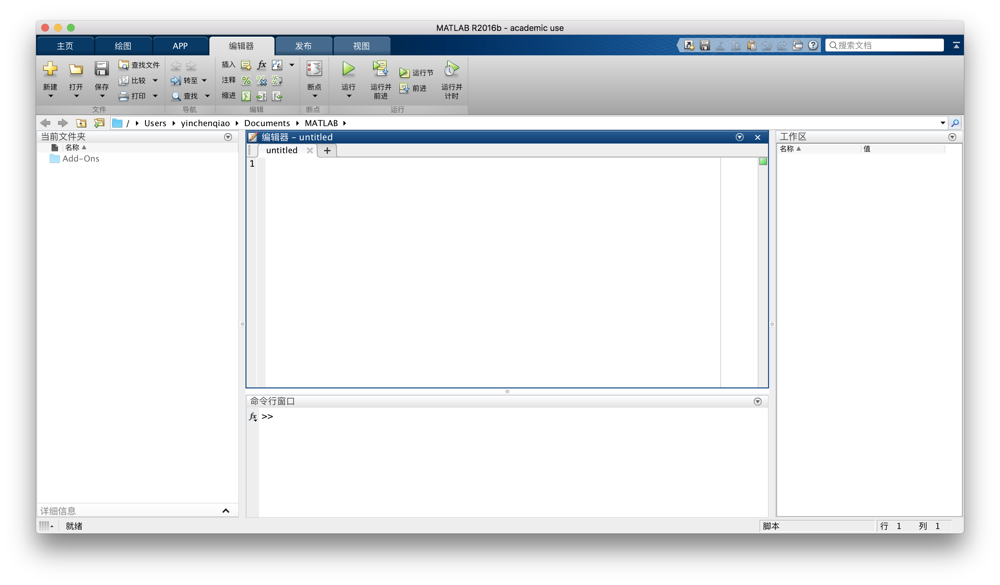
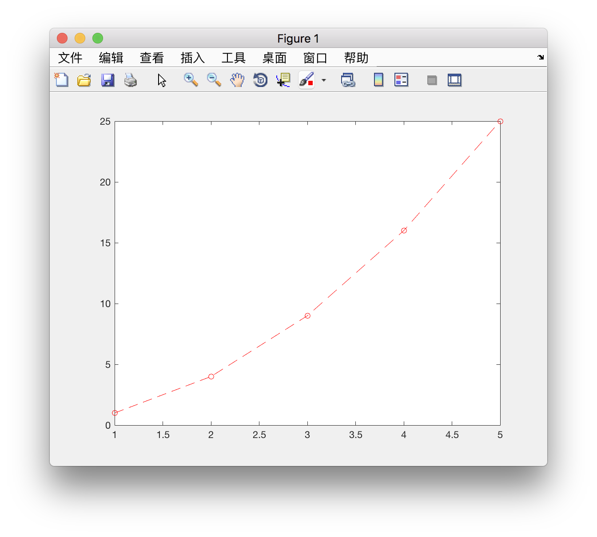

3 MATLAB编程入门 2017.10.08
脚本
在MATLAB中，为了完成一个操作，我们可能需要一次性输入多行代码并执行。在这种情况下，在命令行中输入代码的方式会使调试变得困难。因此，有必要先介绍如何在MATLAB中使用脚本。
按Command+N或单击主页选项卡中的新建脚本，我们会看到MATLAB的界面发生了变化。增加了编辑器、发布、视图三个选项卡和编辑器窗口。这时，我们就可以在脚本中一次性编写多行代码，再一并执行。MATLAB会自动保存用户正在编写的脚本文件，脚本文件的扩展名为m。
在脚本编辑器中输入：
x = 1 + 1
y = -pi
z = x + y
按Option+Command+R或单击编辑器选项卡中的运行，得到结果如下：
x =
2
y =
-3.1416
z =
-1.1416
在脚本编辑器中编写程序和在命令行中编写程序，并无优劣之分，读者可根据自身习惯灵活选择。
细心的读者可能会发现，在运行上面的脚本时，MATLAB在命令行中自动写了一行代码，即脚本的文件名，如“>> untitled”。这也是一种运行脚本的方法。读者在熟悉了MATLAB的操作之后，也可以用这种方法运行脚本。
函数
MATLAB中内置了成千上万条函数，具有非常强大的功能。虽然函数有许多种，但是它们的形式基本是一样的，即：
函数名(参数)
其中，有一些函数可以没有参数，比如quit()，其作用是退出MATLAB。对于没有参数的函数和部分有参数的函数来说，括号可以省略。
对于有多个参数的函数，输入的参数以半角逗号隔开。例如，在脚本编辑器或命令行输入：
e5 = exp(5)
输出结果为：
e5 =
148.4132
在脚本编辑器或命令行输入：
x = [1, 2, 3, 4, 5];
y = x .^ 2;
plot(x, y, 'ro--')
弹出新窗口：
在脚本编辑器或命令行输入：
clear
该命令没有输出结果，其作用是清除内存中的变量，可以看到原本工作区内显示的变量全部消失了。
注释
MATLAB采用"%"作为注释符号。每一行在"%"后面的内容不会被MATLAB执行。
在脚本编辑器中输入：
% This is a test program.
r = rand() %Generate a random number between 0 and 1
输出结果为（示例）：
r =
0.8147
除了可以从键盘上输入"%"外，还可以通过编辑器选项卡中的“注释”和“取消注释”来方便地为整行代码添加注释或取消注释。
在脚本编辑器中输入：
This is a test program.
r = rand() %Generate a random number between 0 and 1
使光标指向第一行，单击“注释”，可以发现MATLAB自动在第一行代码前添加了注释符号。再单击“取消注释”，注释符号消失。
返回值
每一个MATLAB函数都有返回值，返回值中包含了该函数运行的信息。如果希望保留返回值用于其他工作，可以将返回值赋值给新的变量。如果没有赋值给其他变量，一般情况下MATLAB将把返回值赋值给内置变量ans，这个变量被用于保存上一次计算的结果。利用函数的返回值，可以简化许多操作。
在脚本编辑器或命令行输入：
a = sin(pi/3)
输出结果为：
a =
0.8660
在脚本编辑器或命令行输入：
sin(pi/3)
输出结果为：
ans =
0.8660
输入输出函数
在编程中，输入输出是十分重要的。MATLAB中的输入函数为input，输出函数为disp。其用法为：
input(提示输入的内容)
disp(输出的内容)
在使用input和disp函数时，应当注意两点：（1）input函数的返回值为输入的内容，通常需要将返回值赋给其他变量。（2）input和disp函数的参数都是字符串，输入时应加上单引号。有关字符串的内容，下一章会进行更详细的讲解。
在脚本编辑器或命令行输入：
disp('Hello world')
输出结果为：
Hello world
在脚本编辑器或命令行输入：
age = input('How old are you?')
输出结果为：
How old are you?
此时提示需要输入你的年龄，输入20，按Enter键，输出结果为：
age =
20
变量的命名
在MATLAB中，变量不需要预先声明就可以进行赋值。变量的命名遵循以下规则：
（1）变量名和函数名对字母的大小写敏感，因此x和X是两个不同的变量；sin是MATLAB定义的正弦函数，而SIN不是。
（2）变量名必须以字母开头，其后可以是任意字母或下划线，但是不能有空格、中文或标点，例如_xy、a.b均为不合法的变量名，而classNum_x是一个合法的变量名。
（3）不能使用MATLAB的关键字作为变量名，避免使用函数名作为变量名。如果变量采用函数名，则该函数失效，例如设置变量名为"if"、"end"等。
（4）变量名最多可包含63个字符，从第64个字符开始之后的字符将被忽略。为了程序可读性及维护方便，变量名一般代表一定的含义。
通过调用isvarname函数，可以验证变量名是否能被MATLAB接受的合法变量名。该函数返回值为1或0，表示合法或不合法。
在脚本编辑器或命令行输入：
isvarname('_xy')
输出结果为：
ans =
logical
0
在脚本编辑器或命令行输入：
isvarname('classNum_x')
输出结果为：
ans =
logical
1
输出中增加了一个"logical"，我们将在下一章进行解释。
搜索路径
这一部分并无多大实际用处，但是对于调试程序可能非常重要，因此依然对搜索路径做一些介绍。
MATLAB提供了专门的路径搜索器来搜索存储在内存中的M文件和其他相关文件，MATLAB自带的文件所存放路径都被默认包含在搜索路径中。在输入一个字符串如"polyfit"后，MATLAB进行的路径搜索步骤如下：
（1）检查polyfit是不是MATLAB工作区内的变量名，如果不是，执行下一步。
（2）检查polyfit是不是一个内置函数，如果不是，执行下一步。
（3）检查当前文件夹下是否存在一个名为polyfit.m的文件，如果没有，执行下一步。
（4）按顺序检查在所有MATLAB搜索路径中是否存在polyfit.m文件。
（5）如果仍然没有找到polyfit，MATLAB就会给出一条错误信息。
MATLAB的路径搜索步骤解释了上一节中为什么变量采用函数名时会使函数失效而非变量失效。MATLAB首先判定该字符串是工作区内的变量名，所以将其作为变量处理。